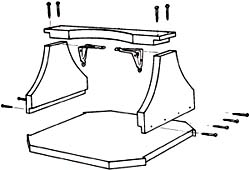
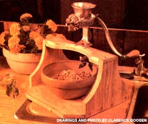

Although it's dang near impossible to run a real do-it-yourself kitchen without frequent recourse to a food grinder . . . the actual use of one of the implements, more times than not, is a royal pain. For at least two reasons:
First, these handcranked appliances almost always have to be clamped to something before you can use them. And the only "something" that most of us can clamp a grinder to without worrying about the resulting scars is generally a bench out in the shop or on the back porch somewhere. Which is awkward. And, sometimes, dirty.
Second, every dad-ratted food grinder in the world- it seems - has been cleverly designed so that its delivery spout just isn't quite high enough off the table for your favorite bowl to slide under. Right? Right. And besides that, have you ever tried to process something juicy-such as apples-through one of these little machines? And had all that juice seep out the bock of the grinder? Of course you have. Irritating, ain't it?
Well, MOTHER researcher Clarence Goosen has the answer to both those problems. . . in the form of a great little mid-winter shop project that you can whip together from odds and ends in almost less time than it takes to talk about it.
The handy-dandy Food Grinder Stand you see here has a base made from a 13-1/2" X 13-1/2" piece of 3/4" plywood. Two pieces of yellow pine (each measuring 7-1/2" X 9") were used in its sides, and its top started life as a 1" X 3" X 13-1 / 2 " stair tread. Two corner brackets, twelve 1-1/2" wood screws, twelve 1/2" wood screws (used to attach the corner brackets), and a small amount of glue (in each joint) were also used in the project.
If your shop is run the way we run ours (every scrap of leftover lumber that can be saved and used another day is), the chances are good that you already have everything you need to construct one of these stands. Or you can (with permission) scrounge through the scrapbox at the local lumberyard or cabinet shop. One way or another, you shouldn't have to spend more than a buck or two of "fresh" money on this project.
The curves on the top and side members of the stand pictured here were laid out merely by moving the bottom of an oval wastebasket around on each piece of wood until it "looked good" and then tracing around it. Just remember to leave enough wood in the narrowest part of the top for your grinder's "foot" to clamp to ... and to make the top's curved cutout "wide enough" (at least eight inches) so that no ground food can fall on it.
Use rabbet (as shown) instead of butt joints when you assemble your stand. Rabbet joints are hardly any more complicated to make than butts, yet are far stronger. And, since it's easy to give a good grinder (and whatever it's mounted on) a real workout from time to time, strength is the name of the game on this mini-project. For the same reason, the side-to-top joints should be reinforced with two corner brackets as indicated.
Although Clarence left his stand "raw", you can sand yours and finish it off with a coat or two of any non-toxic paint or sealer if you wish. You may also want to glue a sponge rubber mat to its bottom to keep it from slipping around during a tough grinding job.
Hard and fast dimensions for this stand have not been given on purpose. As long as you build yours sturdy enough, you can make it any size (within reason) that you need ... to fit the biggest bowl you have in the kitchen. A bowl large enough to catch every dribble from both ends of your food grinder!
|
|
 |
 |